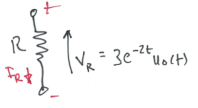

Worksheet 14
Contents
Worksheet 14#
To accompany Chapter 5.3 Fourier Transforms for Circuit and LTI Systems Analysis#
This worksheet can be downloaded as a PDF file. We will step through this worksheet in class.
An annotatable copy of the notes for this presentation will be distributed before the second class meeting as Worksheet 14 in the Week 7: Classroom Activities section of the Canvas site. I will also distribute a copy to your personal Worksheets section of the OneNote Class Notebook so that you can add your own notes using OneNote.
You are expected to have at least watched the video presentation of Chapter 5.3 of the notes before coming to class. If you haven’t watch it afterwards!
After class, the lecture recording and the annotated version of the worksheets will be made available through Canvas.
The System Function#
System response from system impulse response#
Recall that the convolution integral of a system with impulse response \(h(t)\) and input \(u(t)\) is
We let
Then by the time convolution property
We call \(H(\omega)\) the system function.
We note that the system function \(H(\omega)\) and the impulse response \(h(t)\) form the Fourier transform pair
Obtaining system response#
If we know the impulse resonse \(h(t)\), we can compute the system response \(g(t)\) of any input \(u(t)\) by multiplying the Fourier transforms of \(H(\omega)\) and \(U(\omega)\) to obtain \(G(\omega)\). Then we take the inverse Fourier transform of \(G(\omega)\) to obtain the response \(g(t)\).
Transform \(h(t) \to H(\omega)\)
Transform \(u(t) \to U(\omega)\)
Compute \(G(\omega) = H(\omega).U(\omega)\)
Find \(\mathcal{F}^{-1}\left\{G(\omega)\right\} \to g(t)\)
Examples#
Example 1#
Karris example 8.8: for the linear network shown below, the impulse response is \(h(t)=3e^{-2t}\). Use the Fourier transform to compute the response \(y(t)\) when the input \(u(t)=2[u_0(t)-u_0(t-3)]\). Verify the result with MATLAB.
Solution to example 1#
Matlab verification of example 1#
imatlab_export_fig('print-svg') % Static svg figures.
syms t w
U1 = fourier(2*heaviside(t),t,w)
H = fourier(3*exp(-2*t)*heaviside(t),t,w)
Y1=simplify(H*U1)
y1 = simplify(ifourier(Y1,w,t))
Get y2
Substitute \(t-3\) into \(t\).
y2 = subs(y1,t,t-3)
y = y1 - y2
Plot result
ezplot(y)
title('Solution to Example 1')
ylabel('y(t)')
xlabel('t [s]')
grid
See ft3_ex1.m
Result is equivalent to:
y = 3*heaviside(t) - 3*heaviside(t - 3) + 3*heaviside(t - 3)*exp(6 - 2*t) - 3*exp(-2*t)*heaviside(t)
Which after gathering terms gives
Example 2#
Karris example 8.9: for the circuit shown below, use the Fourier transfrom method, and the system function \(H(\omega)\) to compute \(V_L(t)\). Assume \(i_L(0^-)=0\). Verify the result with Matlab.

Solution to example 2#
Matlab verification of example 2#
syms t w
H = j*w/(j*w + 2)
Vin = fourier(5*exp(-3*t)*heaviside(t),t,w)
Vout=simplify(H*Vin)
vout = simplify(ifourier(Vout,w,t))
Plot result
ezplot(vout)
title('Solution to Example 2')
ylabel('v_{out}(t) [V]')
xlabel('t [s]')
grid
See ft3_ex2.m
Result is equivalent to:
vout = -5*exp(-3*t)*heaviside(t)*(2*exp(t) - 3)
Which after gathering terms gives
Example 3#
Karris example 8.10: for the linear network shown below, the input-output relationship is:
where \(v_{\mathrm{in}}=3e^{-2t}\). Use the Fourier transform method, and the system function \(H(\omega)\) to compute the output \(v_{\mathrm{out}}\). Verify the result with Matlab.
Solution to example 3#
Matlab verification of example 3#
syms t w
H = 10/(j*w + 4)
Vin = fourier(3*exp(-2*t)*heaviside(t),t,w)
Vout=simplify(H*Vin)
vout = simplify(ifourier(Vout,w,t))
Plot result
ezplot(vout)
title('Solution to Example 3')
ylabel('v_{out}(t) [V]')
xlabel('t [s]')
grid
See ft3_ex3.m
Result is equiavlent to:
15*exp(-4*t)*heaviside(t)*(exp(2*t) - 1)
Which after gathering terms gives
Example 4#
Karris example 8.11: the voltage across a 1 \(\Omega\) resistor is known to be \(V_{R}(t)=3e^{-2t} u_0(t)\). Compute the energy dissipated in the resistor for \(0\lt t\lt\infty\), and verify the result using Parseval’s theorem. Verify the result with Matlab.
Note from tables of integrals

Solution to example 4#
Matlab verification of example 4#
syms t w
Calcuate energy from time function
Vr = 3*exp(-2*t)*heaviside(t);
R = 1;
Pr = Vr^2/R
Wr = int(Pr,t,0,inf)
Calculate using Parseval’s theorem
Fw = fourier(Vr,t,w)
Fw2 = simplify(abs(Fw)^2)
Wr=2/(2*pi)*int(Fw2,w,0,inf)
See ft3_ex4.m
Solutions#
See Worked Solutions in the Worked Solutions to Selected Week 6 Problems of the Canvas course site.